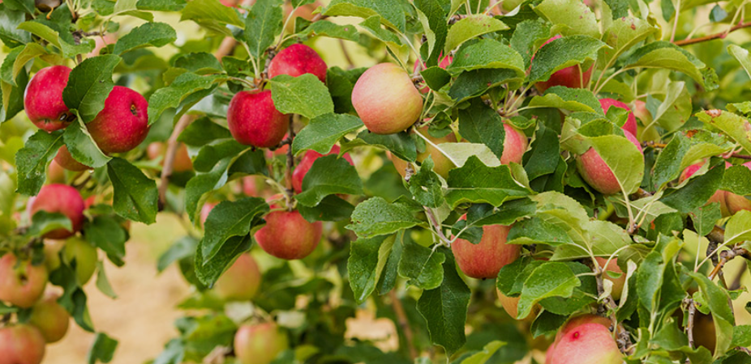
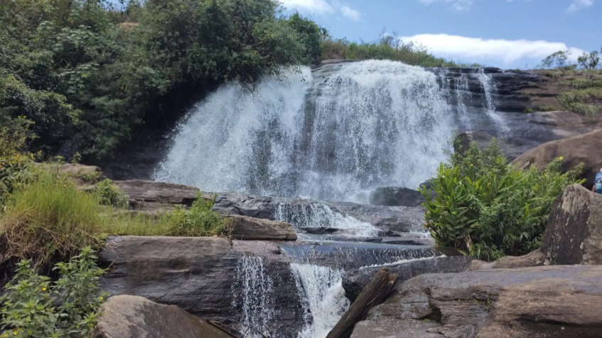
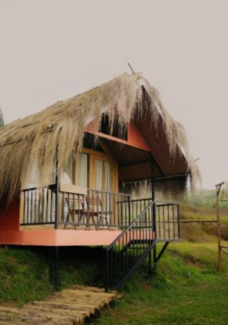
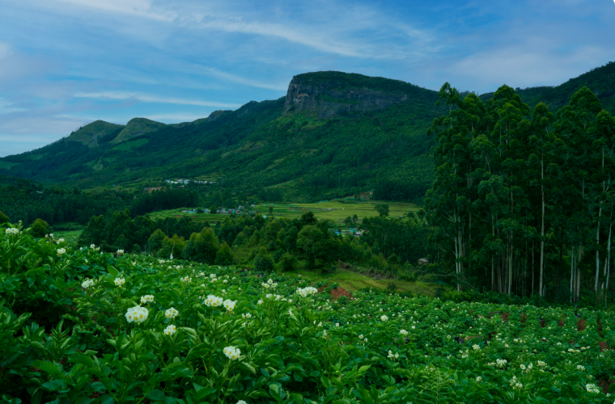
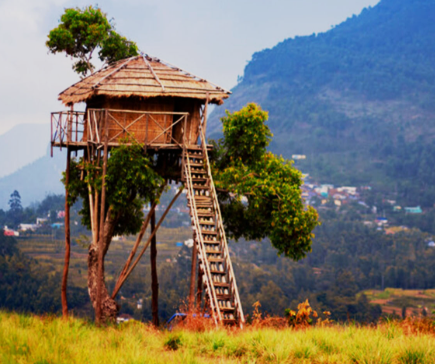

Kanthalloor is a beautiful hill village located in the Idukki district of Kerala, close to the Kerala–Tamil Nadu border. It is famous for its cool climate, fertile valleys, and scenic mountains. Unlike most parts of Kerala, Kanthalloor is well known for its apple orchards, strawberry farms, orange groves, plum trees, peach, and other temperate fruits. The village is also rich in vegetable cultivation and natural beauty.
Visitors can explore fruit orchards, vegetable farms, waterfalls, and breathtaking viewpoints while enjoying the peaceful atmosphere. The pleasant weather and green landscapes make Kanthalloor an ideal destination for nature lovers, photographers, and families. It is one of the most unique tourist destinations in Kerala because of its fruit cultivation and picturesque surroundings.





Kanthalloor is a beautiful hill village in Idukki District, Kerala, located about 50 km from Munnar near the Kerala–Tamil Nadu border. Situated at an altitude of around 1,525 metres (5,000 feet), it is famous for its cool climate, apple orchards, fruit farms, vegetable cultivation and scenic mountain landscapes. It is often called the "Kashmir of Kerala".
Kanthalloor has been an agricultural village for centuries. Due to its cool climate and fertile soil, it became an important centre for growing fruits and vegetables that are uncommon in other parts of Kerala. Today, it is recognized as one of Kerala's premier rural tourism destinations. 0
Kanthalloor is famous for its apple orchards, strawberry farms, orange groves, vegetable farms, scenic viewpoints and peaceful countryside. Visitors can also explore nearby Anamudi Shola National Park, waterfalls and beautiful valleys. 1
The region is covered with fruit orchards, vegetable farms, shola forests, grasslands, medicinal plants and flowering trees. Kanthalloor is the only place in Kerala where apples are cultivated commercially. 2
Today, Kanthalloor is one of Kerala's leading rural tourism destinations. It is famous for apple cultivation, organic farming, fruit orchards and its cool climate. Visitors from across India come to enjoy its beautiful landscapes and fresh farm produce. 3